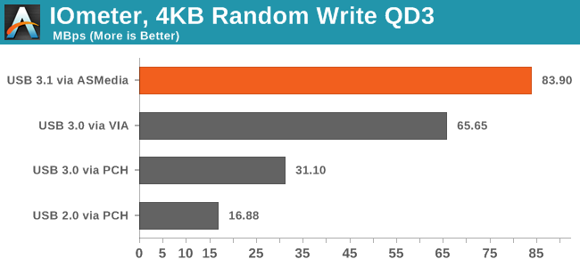

Увесь технічний світ об'єднався навколо стандарту зарядки, після багатьох років фірмових адаптерів. Ну, на кшталт: Ми вже бачимо деякі фрагментації в умовах нового роз'єму USB-C, які могли б у кінцевому підсумку замінити USB, а також те, що на щастя, виявляється, недовго одержимість Samsung була з великим USB Мікро-B роз'ємом для своєї Galaxy лінії. Але, крім того, і з очевидним винятком роз'єму Lightning Apple, Micro USB знищив схильність галузі для користувацьких портів. Десять років тому ви завжди переконувались, що мали правильне "харчування енергією" для кожного з ваших пристроїв. Зазвичай, ви його навіть не помічали. Сьогодні ви можете зарядити свій телефон в будинку свого друга, підключити електронну книгу в будь-який комп'ютер, і завантажувати фотографії з цифрової камери безпосередньо у телевізор, і все завдяки стандартизованим роз'ємом. Хоча, є нова проблема: потужність USB. Не всі зарядні пристрої USB, роз'єми і кабелі є рівними. Ви, напевно, помітили, що деякі зарядні сильніше, ніж інші. Іноді один USB-роз'єм на ноутбуці, здавалося б, більш потужним, ніж інший. На деяких настільних ПК, навіть коли вони вимкнені, ви можете зарядити свій смартфон за допомогою роз'єму USB. Виявляється, є спосіб, щоб все це пояснити - але спочатку ми повинні пояснити, як USB, фактично, працює. Нові специфікації Багато різних зарядних пристроїв для смартфонів ... ГЕТЬ! Є в даний час чотири специфікації USB - USB 1.0, 2.0, 3.0, і 3.1 - додаток до нового USB-C роз'єму. Ми вкаєемо, чим вони істотно відрізняються, але здебільшого ми зосередимося на USB 3.0, так як він є найбільш поширеним. Інший важливий факт - в будь-якій мережі USB, є один господар і один пристрій. Майже в усіх випадках, ваш комп'ютер є господарем, і ваш смартфон, планшет, або камера - цей пристрій. Енергія завжди протікає від хоста до пристрою, але інформація може текти в обох напрямках. Добре, тепер числа. Регулярні USB 1.0 або 2.0 роз'ємм мають чотири контакти, і кабель USB має чотири дроти. Зовнішні контакти забезпечують 5-вольтне джерело живлення. Порти USB 3.0 мають додатковий ряд з п'яти штирів, так USB 3.0 має дев`ять проводів. Є три види USB портів згідно із специфікаціями: стандартний порт вниз за течією, вниз за течією зарядки порт і виділений порт зарядки. Перші два можуть бути знайдені на вашому комп'ютері (і мають бути відповідно позначені), і третій вид належить до «німих» зарядних пристроїв. У USB 1.0 і 2.0 специфікації, стандартний порт здатний доставляти до 500 мА (0.5A); з USB 3.0, вона рухається до 900 мА (0.9A). Зарядні вниз за течією забезпечують до 1500 мА (1.5A). USB 3.1 мають пропускну спроможність 10 Гбіт в те, що називається режимом SuperSpeed +, в результаті чого приблизно еквівалентні першому поколінню Thunderbolt. Він також підтримує заряджання в 1.5A і 3A по шині 5V. USB-С зовсім інший роз'єм. По-перше, цвін універсальний: ви можете помістити його в будь-якому випадку, і він буде працювати, на відміну від USB. Він також здатний вдвічі збільшити пропускну здатность USB 3.0, і може виводити більше енергії. Apple, приєднав USB-C з USB 3.1 на своєму новому MacBook, Google включив його на новому Chromebook Pixel. Ми також починаємо бачити її на телефонах,наприклад OnePlus 2. Але також може бути старі за стилем порти USB, що підтримують стандарт 3.1. Специфікація USB також дозволяє порту "спи та заряджайся", який є, де порти USB на вимкненому комп'ютері залишаються активними. Ви, можливо, помітили це на вашому комп'ютері, на якому енергія завжди протікає через материнську плату.
USB 3.1 був гарячою темою на виставці CES в цьому році, де багато постачальників обговорювали підсумки діяльності цього стандарту і нового, оберненого роз'єму. Апаратних доставка буде через кілька місяців, але дані дострокового виконання виглядають солідно - особливо враховуючи, що сторонні контролери, як правило, з часом покращуються. Anandtech об'єдналася з MSI і Asmedia для порівняння USB 3.1 і порівняли його із сторонніми рішеннями від VIA, а також рішенням від Intel. Результати варіюються, але багато показників є досить вражаючими - особливо порівнюючи випадкову продуктивність читання на глибині черзі 32 між USB 3.1 і Asmedia Intel USB 3.0.  Навіть порівнюючи із контролером від VIA, який показує себе дуже навіть непогано, USB 3.1 на 27% швидший. У порівнянні з Intel - в 1,7 рази швидший.У реальних тестах копіювання файлу, Asmedia USB 3.1 контролер завершує роботу в 75% швидше, ніж Intel USB 3.0 та на 50% швидше ніж продукт VIA. Intel продемонстрував рішення, здатні до 800 Мбайт/с sp RAID, підключеного через USB 3.1; AnandTech - 650-700 Мбайт/с у аналогічному тестуванні. Взагалі кажучи, контролери Intel, як правило, перевершують контролери сторонніх компаній для даного стандарту, але вони також мають тенденцію до затримки відправки - і ще не відомо, коли Intel додасть USB 3.1. Озираючись назад, USB 3.0, був реалізований Intel напрочуд пізно, щоб додати пряму підтримку чіпсета для нового стандарту - для цього компанії знадобилося три роки, щоб розгорнути власне рішення USB 3.0 на перших платах, що поставлялисьзі сторонніми контролерами в 2009 році. У той час, було широко поширена думка, що Intel затягує із USB 3.0 в надії замінити його Thunderbolt як основним периферійним з'яднанням на більшості пристроїв, але ця думка так і не матеріалізувалась. Intel досі не оголосили, коли можуть додати USB 3.1, як і AMD, але ми в очікуванні підтримки для розвитку цієї ситуації. Такі компанії, як Віа, Renesas, Marvell, і Asmedia додадуть можливість з інтегрованими чіпсетами. Що більш цікаво, принаймні, для мене, це те, що підвищення продуктивності зберігання в кінцевому рахунку може означати для поважного зв'язку SATA. В даний час, більшість материнських плат підтримують масив із 4-12 портів SATA, але функції, такі як М.2 і mSATA дозволить для SSD, щоб бути інтегровані безпосередньо на материнській платі. Додайте до цього можливість з швидким зовнішнім зберіганням, і у вас є безліч рішень, які могли б усунути необхідність для портів SATA на всіх - або, принаймні, зменшити кількість додаткових роз'ємів до 1-2 в цілях розширення.
USB 3.0 Promoter Group повідомила про завершення роботи над специфікаціями USB Type-C - коннекторами USB нового покоління - і готовності технології для промислового виробництва адаптерів, кабелів і пристроїв з її використанням. Коннектори, як повідомлялося раніше, стали тонше, і їх нарешті можна підключати не дивлячись: USB Type-C будуть двосторонніми, як Apple Lightning. Раніше розробники з Intel заявили, що впровадження нового стандарту дозволить робити ще більш тонкі портативні пристрої. Новий тип USB витримує струм силою до 5 А, швидкість передачі даних збільшиться до 10 Гбіт/с. Недолік конекторів Type-C в тому, що вони несумісні з минулими поколіннями USB, однак цей нюанс вирішується за допомогою адаптерів